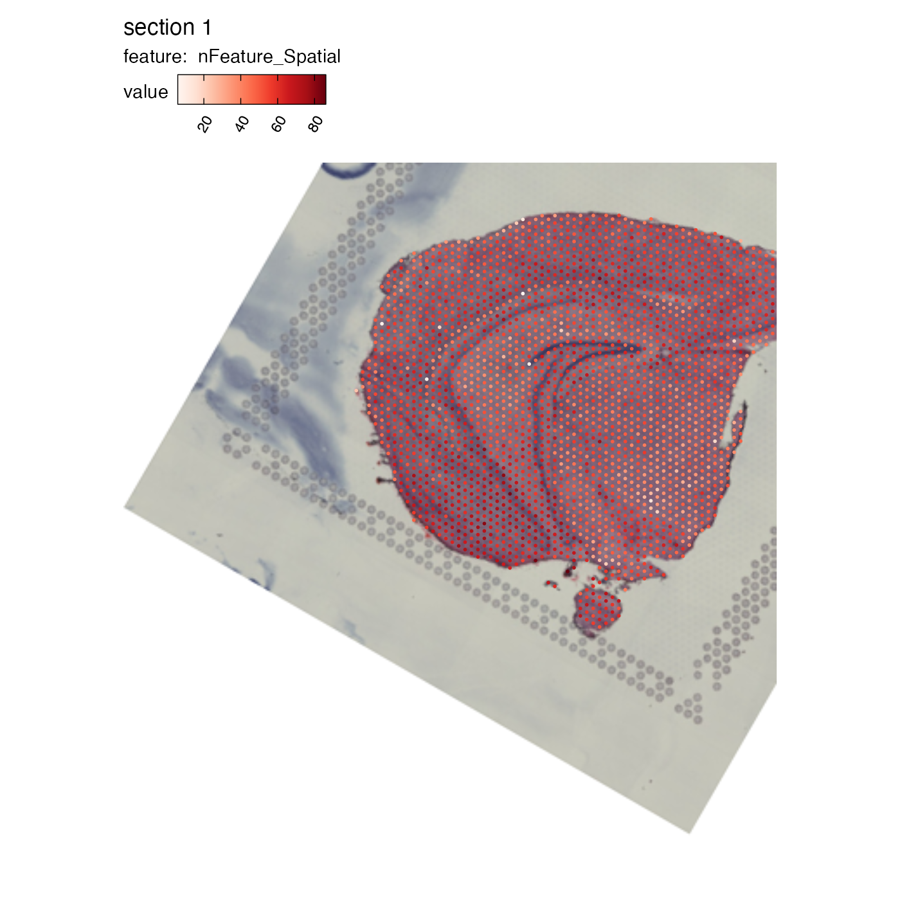

Image alignment
Ludvig Larsson
2023-01-12
image_alignment.RmdIn this tutorial, we will look at two ways of transforming the H&E images in a 10x Visium dataset. The is typically useful if you want to align similar tissue sections to make it easier to compare results between them.
The alignment functions in STUtility2 only handles rigid
transformations, meaning that non-linear distortions are not possible to
mitigate. If rigid transformations are sufficient to generate a decent
alignment, one could for example use the aligned coordinates for 3D
visualization. However, we do not provide visualization functions for 3D
in STUtility2.
se_mbrain <- readRDS(file = system.file("extdata",
"mousebrain/se_mbrain",
package = "STUtility2"))
se_mbrain <- LoadImages(se_mbrain)
ImagePlot(se_mbrain)
STUtility2 offers two ways of manipulating the
orientation and position of H&E images using rigid transformations.
Allowed transformations are:
- translation => move H&E image along x- and/or y-axis
- rotation => rotate image by a fixed degree
- mirror => mirror H&E image along x- and/or y-axis
Transformations can be applied to the H&E images programatically or interactively:
-
RigidTranformImages: if you know what transformations to apply -
RunAlignment: opens an interactive viewer where you can manipulate the H&E images
Basic image transformation
The first step is to generate a tibble with the transformations that
you want to apply. generate_rigid_transform is a helper
function that makes this task a bit easier.
In the example below, we’ll mirror the H&E image along the x
axis, rotate it by 30 degrees, move it 20% to the right and 20% up.
Translations (tr_x and tr_y) are provided as
proportions. For example, tr_x = 0.1 means that you’ll move
the H&E image 20% of the image width to the right.
transforms <- generate_rigid_transform(mirror_x = TRUE, angle = 30, tr_x = 0.2, tr_y = -0.2)
transforms## # A tibble: 1 × 7
## sampleID mirror_x mirror_y angle tr_x tr_y scalefactor
## <dbl> <lgl> <lgl> <dbl> <dbl> <dbl> <dbl>
## 1 1 TRUE FALSE 30 0.2 -0.2 1Now we are ready to apply the transformations:
se_mbrain <- RigidTransformImages(se_mbrain, transforms = transforms)The original H&E image is still stored in the Seurat
object, so when plotting we need to specify that we want to use the
transformed image:

The spot coordinates are transformed together with the H&E image,
so if we use MapFeatures or MapLabels, we
should see that the spots are still correctly positioned on the H&E
image.
NB: Translations might result in moving parts of the H&E image outside of the predefined ‘canvas’. In our example below, this results in some spots being located outside of the view and these will therefore be dropped. The original image dimensions are always retained.
MapFeatures(se_mbrain, features = "nFeature_Spatial", image_use = "transformed")## Warning: Removed 27 rows containing missing values (`geom_point()`).
Interactive alignment
Here we will take a look at three H&E images with different orientations, and the goal is to align them to a common coordinate system.
You can click on ‘show’ to see the code I have used to generate this
dummy data using RigidTransformImages.
show
se_merged <- MergeSTData(se_mbrain, list(se_mbrain, se_mbrain)) |> LoadImages()
transforms1 <- generate_rigid_transform(mirror_x = TRUE, angle = 45, sampleID = 1)
transforms2 <- generate_rigid_transform(mirror_x = TRUE, scalefactor = 0.8, sampleID = 2)
transforms3 <- generate_rigid_transform(mirror_y = TRUE, scalefactor = 0.6, sampleID = 3)
transforms <- bind_rows(transforms1, transforms2, transforms3)
se_merged <- RigidTransformImages(se_merged, transforms = transforms, verbose = TRUE)
se_merged@tools$Staffli@rasterlists$raw <- se_merged@tools$Staffli@rasterlists$transformed
se_merged@tools$Staffli@rasterlists$transformed <- NULL
se_merged@tools$Staffli@meta_data <- se_merged@tools$Staffli@meta_data |>
select(-pxl_col_in_fullres, -pxl_row_in_fullres) |>
rename(pxl_col_in_fullres = pxl_col_in_fullres_transformed, pxl_row_in_fullres = pxl_row_in_fullres_transformed)
se_merged <- RunAlignment(se_merged)When we call RunAlignment, an interactive application
will open up in a separate window.

If you click on help, you will see instructions on how to use the app:

We can select what H&E images should be put into view by clicking on the button above the alignment panel:

H&E images can be moved around by dragging the image with the cursor. The dotted borders around the H&E images highlights the dimensions of the ‘canvas’. Anything outside of these borders will be removed.
Some of the interaction is handled by pressing a key and clicking on
an H&E image. For example, you can change the transparency by
holding q or w and clicking on an H&E
image.
We can rotate an H&E image by holding SHIFT and
dragging the blue dot in the corner of the image. Similarly, scaling can
be done by holding and dragging the blue dot.
In the example below, we can see that ‘image2’ has been scaled and rotated to align with ‘image1’. All that is left is align ‘image2’ with ‘image1’:
 In the end, we
should be able to get a decent alignment of the three H&E images.
The table on top of the alignment panel shows the transformations that
have been applied:
In the end, we
should be able to get a decent alignment of the three H&E images.
The table on top of the alignment panel shows the transformations that
have been applied:

Once we are satisfied with the alignment, we can press the
Quit & save button which will trigger the alignment of
our H&E images (in R) and the results will be saved to our
Seurat object.
If we set image_use='transformed' in
MapFeatures, we will see that the the H&E images are
now aligned.
NB: Manipulating the images will often lead to some cropping. In the first image below, we can see that the corners are cropped and filled with empty white space.
MapFeatures(se_merged, features = "nFeature_Spatial", image_use = "transformed", ncol = 3) &
theme(legend.position = "right", legend.text = element_text(angle = 0))Now that the data is aligned, it will be easier to look at specific
areas of the tissue sections with the crop_area option
se_merged <- LoadImages(se_merged, image_height = 1.5e3)
MapFeatures(se_merged, features = "nFeature_Spatial", image_use = "transformed",
ncol = 3, crop_area = c(0.4, 0.43, 0.6, 0.67)) &
theme(legend.position = "right", legend.text = element_text(angle = 0))